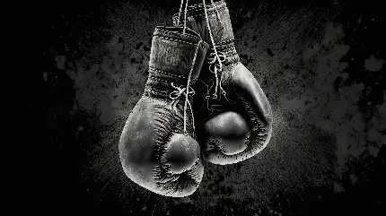

بوکس
تاریخچه، تکنیکها، قوانین و روانشناسی ورزشی بوکس
بوکس یکی از قدیمیترین و علمیترین رشتههای مبارزهای جهان است که ترکیبی از استقامت، قدرت، تمرکز ذهنی و استراتژی محسوب میشود. این ورزش بر مبنای مهارتهای ضربهزنی، دفاع، کنترل فاصله و تصمیمگیری لحظهای شکل گرفته و به دلیل ساختار حرفهای و قوانین دقیق، امروزه به یک ورزش جهانی با ارزشهای فیزیکی و روانی بالا تبدیل شده است.
تاریخچه بوکس
ریشههای بوکس به هزاران سال پیش بازمیگردد؛ اما بوکس مدرن از قرن هجدهم در انگلستان شکل گرفت و با قوانین مارکویز آو کوئینزبری استاندارد شد. امروزه بوکس آماتور و حرفهای تحت نظارت سازمانهای بینالمللی مانند AIBA و WBA برگزار میشود.
قوانین اصلی بوکس
بوکسورها با دستکشهای استاندارد و در رینگ مربع شکل مبارزه میکنند. مسابقه شامل چند راند است و ضربهزدن فقط با مشتهای بسته مجاز است. ضربه به پشت سر، کمر و پایینتنه ممنوع است. داور بر اساس تعداد ضربات مؤثر، کنترل مسابقه و دفاع، امتیازدهی یا مبارزه را متوقف میکند.
تکنیکهای اساسی بوکس
جَب (Jab): مهمترین ضربهٔ مقدماتی برای کنترل فاصله، سنجش حریف و آغاز حملات.
کراس (Cross): یک ضربهٔ قدرتمند مستقیم با دست عقب که معمولا ضربهٔ پایانی در ترکیبهاست.
هوک (Hook): ضربهٔ نیمدایرهای به پهلو یا صورت حریف که نیازمند قدرت بالا و زمانبندی دقیق است.
آپِرکات (Uppercut): ضربهٔ رو به بالا که به چانه وارد میشود و یکی از تکنیکهای کلیدی در فاصلهٔ نزدیک است.
حرکات دفاعی: شامل اسلیپ (جاخالی)، داک (نشستن)، بلاک، پارری و فُوتورک که نقش حیاتی در کاهش ضربات حریف دارد.
اهمیت آمادگی جسمانی در بوکس
بوکس ترکیبی از قدرت انفجاری، استقامت قلبی–تنفسی، سرعت واکنش و هماهنگی عصبی–عضلانی است. تمرینات این رشته شامل طنابزدن، تمرینات ضربه با کیسه، قدرتی، دومیدانی، سایهبوکس و تمرینات سرعتی است. سیستم انرژی غالب در بوکس ترکیبی از بیهوازی لاکتیکی و هوازی است.
روانشناسی در بوکس
بوکس تنها یک مبارزهٔ فیزیکی نیست؛ بلکه نبردی ذهنی نیز هست. کنترل هیجان، مدیریت استرس، تمرکز بالا، اعتمادبهنفس، تصمیمگیری سریع و تحمل فشار روانی از ارکان مهم این ورزش هستند. بوکسورها از تکنیکهایی مانند تصویرسازی ذهنی، خودگفتاری مثبت و کنترل تنفس برای حفظ آرامش و عملکرد بهینه استفاده میکنند.
به طور کلی بوکس :
بوکس ورزشی علمی، تاکتیکی و بسیار چالشبرانگیز است که علاوه بر تقویت قدرت بدنی، باعث افزایش تمرکز، اعتمادبهنفس، انضباط فردی و توانایی مدیریت هیجان میشود. برای ورزشکارانی که به ترکیب قدرت، تکنیک و ذهنیت قوی علاقه دارند، بوکس یکی از کاملترین ورزشهای رزمی بهشمار میرود.